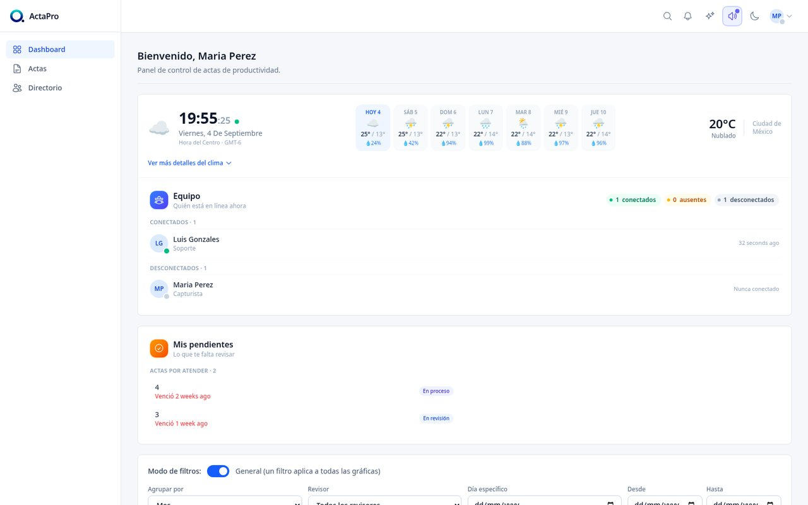
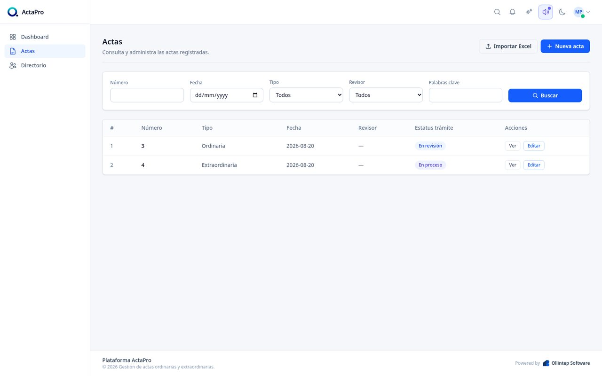
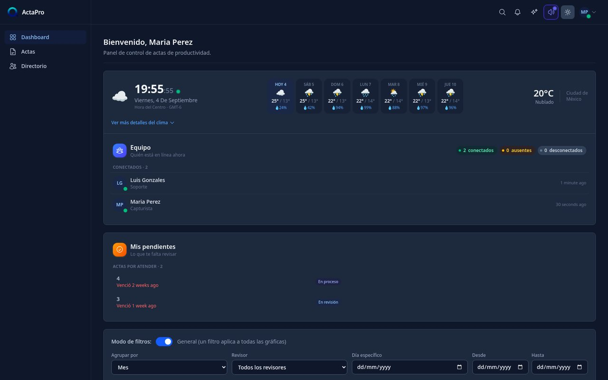

Captura, da seguimiento y audita las actas administrativas de tu organización desde un solo panel, con reportes en tiempo real.
De la captura inicial al cierre del expediente, con historial completo de cada cambio.
Registra actas ordinarias y extraordinarias con folio, montos, checklist de expediente y evidencias adjuntas.
Cada acta lleva su propio checklist de pendientes por resolver, para que nada se quede a medias entre revisiones.
KPIs, montos y estatus por revisor o capturista, con gráficas que puedes reordenar y guardar a tu gusto.
Capturistas, revisores y administradores, cada uno con exactamente los permisos que necesita y nada más.
Capturas reales de la plataforma: el mismo panel que usa tu equipo todos los días.



Del piloto de un solo departamento a la licencia instalada en tu propio servidor.
Prueba ActaPro en un solo departamento, sin compromiso.
Sin costo de entrada
Ollintep aloja todo; tu equipo solo entra y trabaja.
+ $8,500 de implementación (pago único) · hasta 10 usuarios
Infraestructura propia y aislada, para instituciones grandes.
+ $25,000 de aprovisionamiento inicial · usuarios ilimitados
El software vive en tu propio servidor, para siempre.
Incluye hasta 15 usuarios · póliza de soporte anual opcional
ActaPro nace de digitalizar el proceso real de captura y seguimiento de actas de una organización: folios, revisores, pendientes y evidencias que antes vivían en carpetas y hojas de cálculo sueltas.
Por eso el panel prioriza claridad sobre adorno: cada usuario ve exactamente lo que necesita para hacer su parte del trámite.
Llámanos, escríbenos o encuéntranos en redes sociales para conocer ActaPro a detalle.